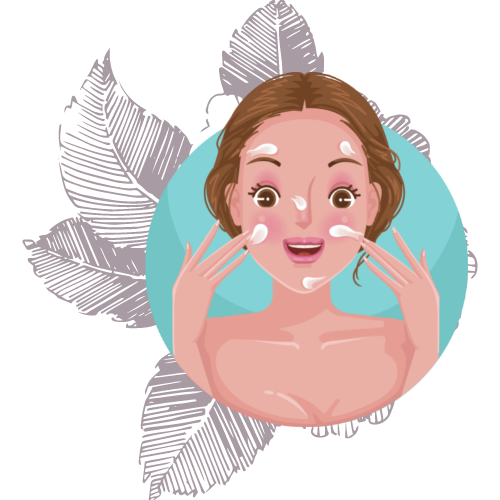
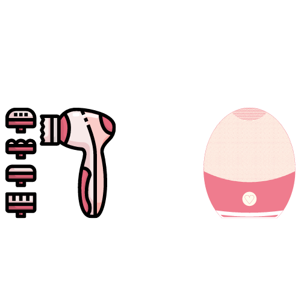
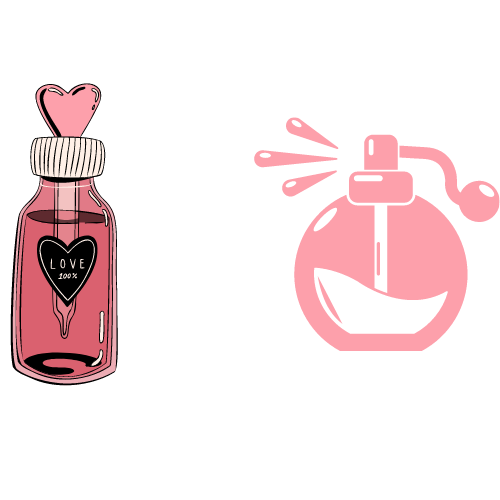
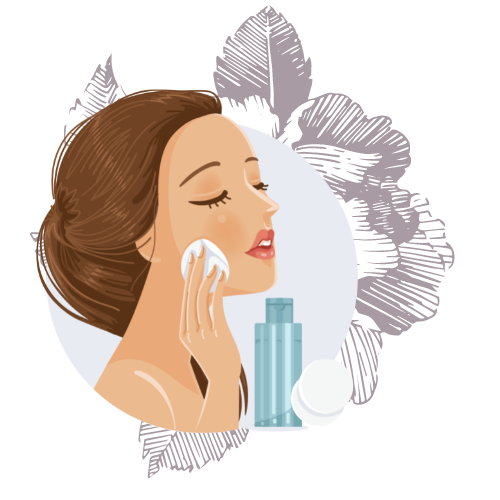
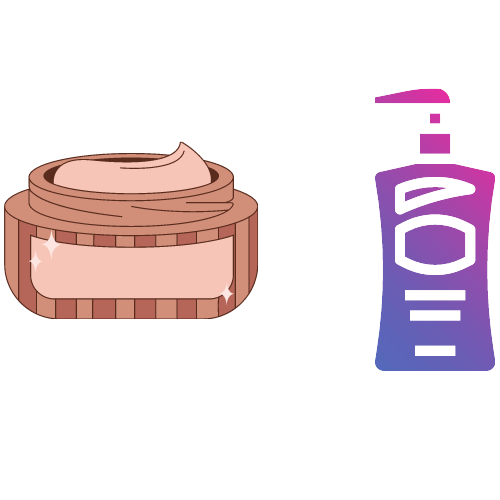
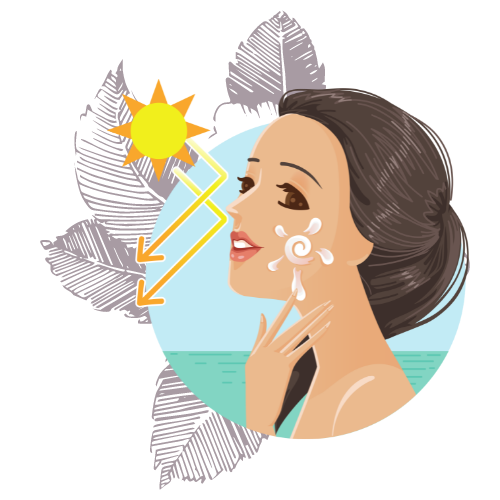
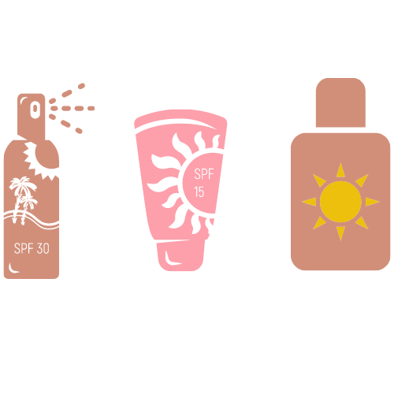

Cuidado Basico de la piel
|  | Jabon |
Lavate la Cara |
A la mañana y a la noche lavate la cara asi quitas impurezas y EVITAR puntos negros o Maculas (granitos) si lo puedes acompañar con un cepillito de Limpieza como por ejemplo |
 |
Locion o Tonico |
Calma la Piel |
Despues de quitarle toda la suciedad ya sea del dia o la noche lo mejor es volver a darle proteccion a esa piel desnuda y limpia pero sobre todo se debe tener en cuenta que al limpiarla ella va a sentirse agredida por esto agregale un poco de tranquilidad con un tonico |
 | |
|  | Cremas o Serums |
Hidratarse la Piel |
agregarle 5 minutos despues una crema o serum va a ser el momento perfecto para que la piel reciba todo lo que nesecita externamente |
 |
|  | Crema o locion |
Protegerse la Piel |
Ahora se debe tener en cuenta que al hacer ingresar cosas buenas en la piel tambien ingresan cosas malas como rayos uva o uvb que esto hace que se arrugue o que se generen lineas de expresion profundas asi que la mejor forma de protegerse es aplicandose protector solar pero no dejar de recordar que se elimina o pierde efecto cada dos horas asi que se tiene que renovar una y otra vez asi no se exponga al sol |
 |